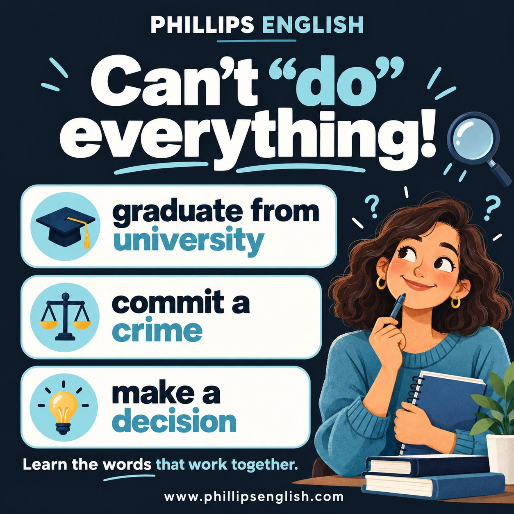

“Do” is a useful little word. Some learners give it rather too much responsibility 😂
Do a decision. Do a crime. Do university.
You can often understand the idea, but choosing the right verb makes your English clearer and more natural.
These word partnerships are called collocations. Learning them together saves you from having to guess which verb belongs where.
“Do university” depends on what you mean
If you mean you completed your degree, say:
“I graduated from university.”
If you’re still studying, say:
“I’m studying at university.”
You can also say “I’m doing a degree in engineering.” So “do” hasn’t been completely banned. It just needs the right company.
For an interview, you might say:
“I graduated from university with a degree in business, then joined a marketing company.”
That tells the listener exactly what you completed and what happened next.
You commit a crime
The usual expression is “commit a crime”, rather than “do a crime”.
“The police believe he committed a crime.”
We also say commit fraud, commit an offence and, in sport, commit a foul.
Useful vocabulary. Preferably for discussing the news rather than describing your weekend.
More combinations worth learning
| Instead of | Say |
|---|---|
| Do a decision | Make a decision |
| Do a mistake | Make a mistake |
| Do a photo | Take a photo |
| Do a question | Ask a question |
| Do a speech | Give a speech |
| Do progress | Make progress |
“Do” still belongs in plenty of expressions, including do homework, do research and do your best.
There isn’t one neat rule that explains every combination. English would hate to make life that straightforward.
Learn the phrase, then use it
Instead of writing “decision” in your vocabulary notes, write “make a decision” and add a sentence:
“We need to make a decision before Friday.”
Then practise saying it in a conversation. Recognising a phrase on a page is useful, but being able to use it in a meeting is the goal.
In my lessons, we work on these combinations through topics and situations you actually need. I’ll help you spot the awkward wording, explain the alternatives and practise using them naturally.
Got a phrase you keep getting corrected on? Bring it along. Let’s find “do” a slightly more manageable workload.